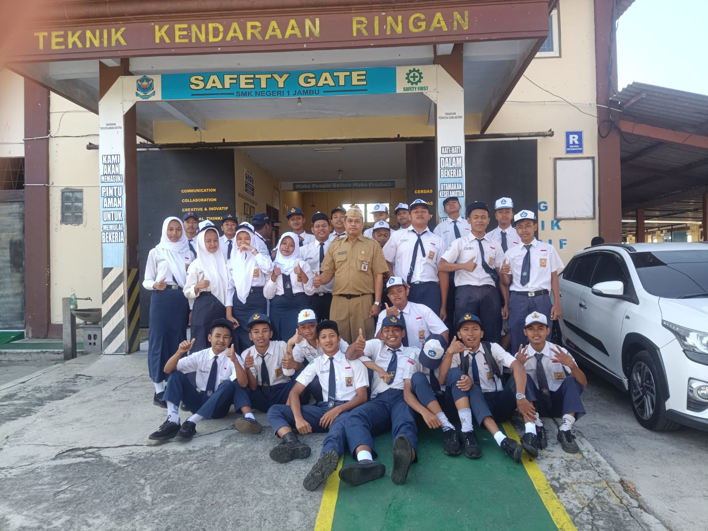

Pendahuluan
Selamat datang di artikel ini. Di sini, kita akan membahas topik yang menarik dan informatif. Artikel ini dirancang untuk memberikan pemahaman mendalam tentang topik tertentu.
Isi Artikel 1
Berikut ini adalah text penting yang akan kita bahas:
- XTKR 1 Kelas kami berjumlah 36 orang dengan walikelas kami adalah Pak Noto Adi Winarno,S.T.
- Kelas ini memiliki beberapa cerita unik. Contoh diantara nya adalah salah satu member kelas kami pernah dikirim langsung ke Koramil Jambu untuk menjalani pelatihan sikap, hal ini adalah konsekuensi dari kesalahan yang pernah dilakukan oleh salah satu siswa di kelas kami.Dikarenakan hal ini beberapa murid yang terlibat harus ditahan handphone nya dan harus diambil oleh orang tua nya, beberapa dari handphone tsb hendak di cek, namun salah satu wali dari siswa menolak tegas karena hal itu melanggar undang undang.Selain itu kelas kami memiliki sebuah "KEBIASAAN" unik, yaitu sebuah turnament game kecil yang sering dilakukan oleh siswa dikelas kami.
- Dengan sedikit rangkaian pengalaman tersebut kelas kami pernah dipandang kurang baik di kalangan guru atau kelas lain, namun satu hal yang selalu kami percaya adalah, kesalahan adalah sebuah pembelajaran untuk tumbuh, berkembang menjadi lebih baik dan lebih siap dalam menghadapi masalah lainya. Kami adalah keluarga, pahit manis nya sebuah perjalanan akan kami rasakan bersama.
Semoga artikel ini dapat membantu anda dalam memahami topik ini lebih baik. Jika Anda memiliki pertanyaan, jangan ragu untuk bertanya!
Kesimpulan
Kami harap artikel ini bermanfaat bagi Anda. Terima kasih telah membaca. Jangan lupa untuk membagikan artikel ini kepada teman-teman Anda!